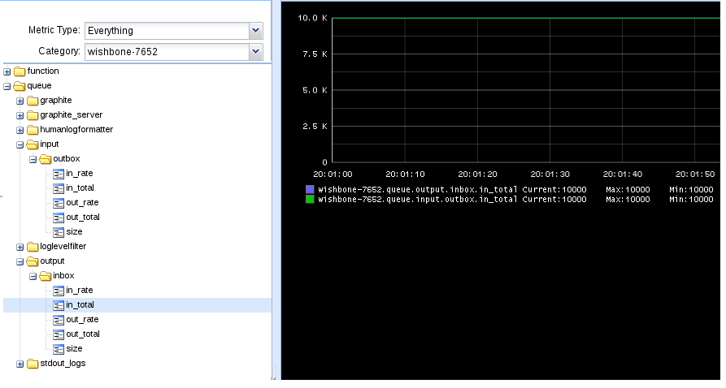

In this article I would like to explore the possibilities of creating a TCP based event proxy which balances events to one or more TCP backends. For this we will run through a couple of scenarios in which we highlight different approaches.
Installation
For the below mentioned scenarios we need to have 3 components installed:
Wishbone itself can be installed through pypi while the two TCP modules have to be installed from Github.
When everything is installed correctly you should be able to execute the following:
(python-2.7.5)[smetj@indigo ~]$ wishbone list
You should at least see the two tcp modules.
The bootstrap files used throughout this article can be downloaded from Github_.
Introduction
The bootstrap files used for the following scenarios can be downloaded from here. In order to complete the examples you require a working Wishbone setup along with the 2 TCP modules and a working installation of nc and pv which both are in general available through your package manager.
The scenarios focus on simplicity over practical use in order to highlight the different aspects Wishbone offers.
The bootstrap files are configured to make use of Graphite to store Wishbone specific metrics. This is particularly handy to have some insight about the dataflow inside Wishbone. If you don't wish to make use of this you can omit the "metrics" part of each bootstrap file.
Each scenario requires a set of servers servers. The easiest is to create a new terminal/console for each of them so they run separately from each other in the foreground.
Scenario I - Simple setup
In this first scenario we will create 1000 events and pipe them via Wishbone to some external TCP service. Each line is one event. We want to verify whether we have received all events we have send.
1 2 3 4 5 6 7 8 9 10 11 12 13 14 15 16 17 18 19 20 21 22 23 24 25 26 27 28 29 | ---
metrics:
graphite:
module: wishbone.builtin.metrics.graphite
modules:
graphite_server:
module: wishbone.output.tcp
arguments:
host: graphite-001
port: 2013
input:
module: wishbone.input.tcp
arguments:
port: 10000
output:
module: wishbone.output.tcp
arguments:
port: 20000
routingtable:
#metric stream
- graphite.outbox -> graphite_server.inbox
#organize event stream
- input.outbox -> output.inbox
...
|
In the first console we start our destination server on port 20000. In the bootstrap file we have defined that events will be submitted that port (line 24). We pipe the input it receives to pv, in order to have some basic metrics available about incoming data after which we write the incoming data to a file in order to verify the generated data and received data is equal.
Output console
$ nc -kl 20000|pv -l > scenario_1.output
Wishbone console
In the second console, In another console we start the wishbone server.
$ wishbone debug --config scenario_1.yaml
Input console
In the third console we first generate the data file, take the hash from it and then send it to wishbone on port 10000.
$ for c in $(seq 1 10000);do echo hello ;done > scenario_1.input
We take the hash value of our input file:
$ sha256sum scenario_1.input7ad0a3fa03c69b6af08ebbede9e20dad2687b5b46481543733152b2ca661e333
Now we send the content of that file to Wishbone:
$ cat scenario_1.input | nc localhost 10000
Verifying the results
In the output console we can now stop the server by pressing ctrl+c. If all went well, scenario_1.output has the same checksum as the input file we have generated on the input console.
If we go take a look to Graphite, we can conclude 10000 events arrived in the input module's outbox queue and 10000 events arrived in the output module's inbox queue. This is consistent to the routing table we have defined.

Conclusion
Nothing fancy, simple and straightforward functionality.
Scenario II - Loadbalance over multiple destinations
In this scenario we repeat the setup of scenario I but we will spread the events over 2 destinations. For this we need to add the roundrobin module and one more output module (line 27).
1 2 3 4 5 6 7 8 9 10 11 12 13 14 15 16 17 18 19 20 21 22 23 24 25 26 27 28 29 30 31 32 33 34 35 36 37 38 39 | ---
metrics:
graphite:
module: wishbone.builtin.metrics.graphite
modules:
graphite_server:
module: wishbone.output.tcp
arguments:
host: graphite-001
port: 2013
input:
module: wishbone.input.tcp
arguments:
port: 10000
roundrobin:
module: wishbone.builtin.flow.roundrobin
output_1:
module: wishbone.output.tcp
arguments:
port: 20000
output_2:
module: wishbone.output.tcp
arguments:
port: 20001
routingtable:
#metric stream
- graphite.outbox -> graphite_server.inbox
#organize event stream
- input.outbox -> roundrobin.inbox
- roundrobin.one -> output_1.inbox
- roundrobin.two -> output_2.inbox
...
|
The way events stream from one module to the other is defined in the routing table (line 32). By default, the roundrobin module has only 1 inbox queue. when connecting other queues to the module we can choose whatever name we assign to these queues (line 37 and 38).
The second external TCP server is going to listen on port 20001 (line 30). The plan is to split the 10000 events over these 2 TCP servers.
Output console 1
$ nc -kl 20000|pv -l > scenario_2_1.output
Output console 2
$ nc -kl 20001|pv -l > scenario_2_2.output
Wishbone console
$ wishbone debug --config scenario_2.yaml
Input console
We create again a file containing 10000 events:
$ for c in $(seq 1 10000);do echo hello ;done > scenario_2.input
We take the hash value of our input file:
$ sha256sum scenario_2.input7ad0a3fa03c69b6af08ebbede9e20dad2687b5b46481543733152b2ca661e333
Now we send the content of that file to Wishbone:
$ cat scenario_1.input | nc localhost 10000
Verifying the results
The events have been split equally over both destinations:
$ wc -l scenario_2_1.output scenario_2_2.output5000 scenario_2_1.output5000 scenario_2_2.output10000 total
The combined hash of both files scenario_2_1.output and scenario_2_2.output using following command:
$ cat scenario_2_1.output scenario_2_2.output |sha256sum7ad0a3fa03c69b6af08ebbede9e20dad2687b5b46481543733152b2ca661e333 -
Conclusion
Adding additional destinations is just a matter of adding more (output) modules and connect them appropriately in the routing table to the roundrobin module.
Scenario III - Loadbalance and failover
Obviously, everything works out when all destinations are in working order. In reality this is not always going to be the case. In this scenario we will explore how Wishbone deals with different types of outages.
destination becomes unavailable after initializing Wishbone
If however a destination becomes unavailable after the module is already accepting data, we might end up in a different situation.
Repeat scenario II but with that difference you interrupt one of both destinations while data is being transmitted. After all events are submitted let's check how many events we have received:
$ wc -l scenario_3_1.output scenario_3_2.output647208 scenario_3_1.output302444 scenario_3_2.output949652 total
So we come short 50348 messages at this stage. Where are they?
If we have a look in Graphite to the metrics Wishbone has produced we can see that metric wishbone.queue.output_2.inbox.size has a value of 50347. These messages are stuck in Wishbone and are not going anywhere as long as destination 2 is offline. What happened is that messages were initially allowed to come into the output_2 module until that destination became unavailable after which the inbox of output_2 got locked.

If sum up all number we still come short 1 message. It is safe to presume this message did arrive in nc but wasn't yet written to disk since we have interrupted the running server. Using the metrics Wishbone receives we can sum the total number of messages which passed the queue wishbone.queue.output_1.inbox.out_total and wishbone.queue.output_2.inbox.out_total which is 949654. Add to this the number of messages being stuck output_2 wishbone.queue.output_2.inbox.size then we have 1000001. From this number we have to deduct 1 because it's required to pop a message from a queue in order to try to submit it. That one message is put back in the module's inbox queue.
At least we have all our messages accounted for, but it's still not a desirable situation.
The solution
To mitigate this, we can initialize the output modules with a argument which alters the way it deals with messages which failed to go out. That behavior is described in the output module patterns documentation.

Basically, it boils down to this: In this bootstrap file we initiate the output_2 module by setting the failed argument to true (line 35). That creates a failed queue in which all failed events arrive. This failed queue is in its turn connected (line 46-47) to the funnel module (line 19), which allows the failed events to flow to a working output. Since the failing output's inbox queue is locked for incoming events, it will be drained from all events.
When repeating our last scenario using this bootstrap file, we have according to Graphite no queues anymore containing stuck messages.
Conclusion
Going through the above scenarios we have seen that Wishbone's module and queue connectivity is a very flexible approach to design and define alternative message flows. The module registration and event flow syntax facilitates easy modification of existing setups with new functionality. By submitting Wishbone metrics into Graphite we have a view on the internal message flow and allows us to verify and confirm assumptions we make about the message flow.
Comments
comments powered by Disqus